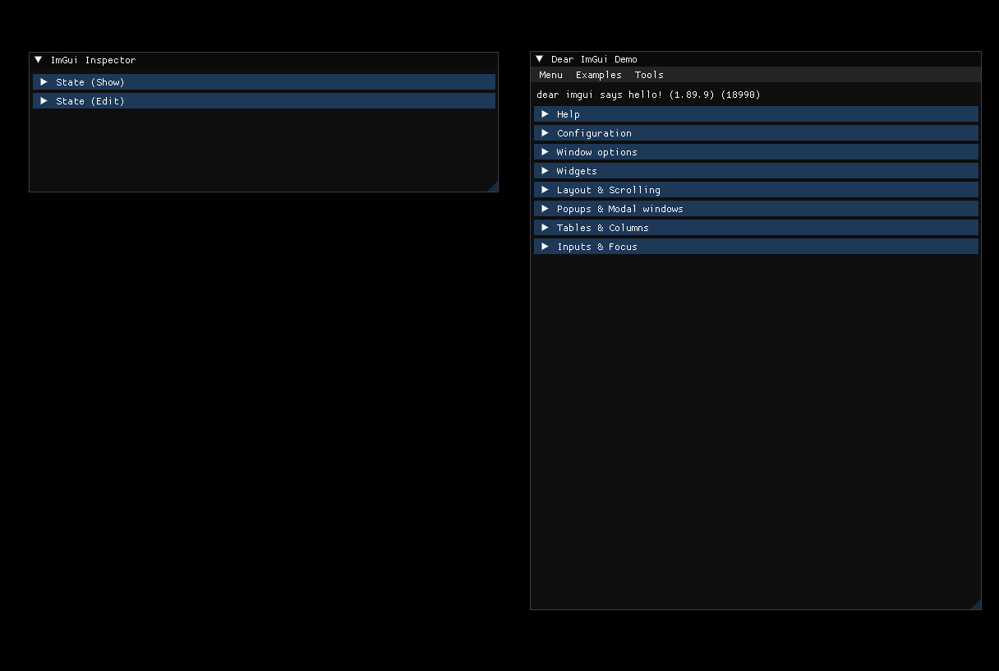
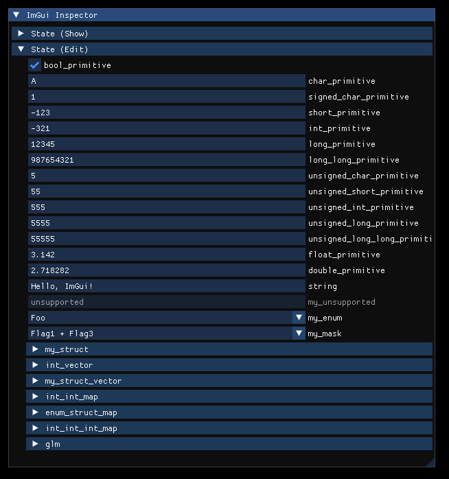

ImGui
Using the ImGui integration plugin and the ImGuiInspector resource.
The ImGui plugin allows you to integrate the Dear ImGui library with Cubos, making it quick, straightforward, and effortless to create user interfaces and interactive debugging tools within your applications.
First, let's start by including the header files we need.
#include <cubos/engine/assets/plugin.hpp> #include <cubos/engine/font/plugin.hpp> #include <cubos/engine/imgui/inspector.hpp> #include <cubos/engine/imgui/plugin.hpp>
Then, make sure to add the plugin.
cubos.plugin(imguiPlugin);
When you're using ImGui directly in an application or a library, you must also make sure to initialize the ImGui context on it. To do so, you can add a startup system just like the one below:
cubos.startupSystem("set ImGui context").after(imguiInitTag).call([](ImGuiContextHolder& holder) { ImGui::SetCurrentContext(holder.context); });
You can read more about this in the documentation of cubos::
cubos.system("show ImGui demo").tagged(imguiTag).call([]() { ImGui::ShowDemoWindow(); });
Ensure that you add your system with the cubos.imgui tag; otherwise, the ImGui elements from that system won't be be visible.
Pretty simple right? You're now equipped to craft and utilize ImGui's functions to design your cool user interface.
Now, we'll also show you how you can use the cubos::ImGuiInspector::show and ImGuiInspector::edit.
cubos.system("data inspector example").tagged(imguiTag).call([](ImGuiInspector inspector, State& state) { ImGui::Begin("ImGui Inspector"); inspector.show("State (Show)", state); inspector.edit("State (Edit)", state); ImGui::End(); });
You can find more about how to use Dear ImGui stuff here.